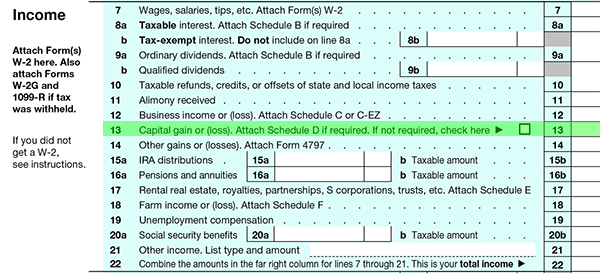

Capital gains on assets are generally reported on line 13 of Form 1040. Generally speaking, capital gains and losses will be netted against each other on the front page of Schedule D a copy of which can be downloaded and printed by clicking here.
Any net gains from Schedule D will be recorded on line 13 of Form 1040. Net losses will be reported on that line up to $3,000, with the balance carried forward to the next year. If the gain or loss was associated with assets used in a trade or business, then they will be reported on line 14.

The key principle behind capital gains taxation is the recovery of capital doctrine. This doctrine states that when a taxable sale or exchange occurs, the seller may be permitted to recover his or her investment in the property before recognizing a gain or loss. In other words, the IRS is not going to tax an individual on the entire amount of the sale of property. In general, only the gains are taxed.
To understand how this doctrine is applied in the recognition of capital gains and losses, there are some key concepts that must first be understood:
We will discuss these concepts on the next three pages, followed by a discussion of other considerations associated with wash sales and worthless securities.